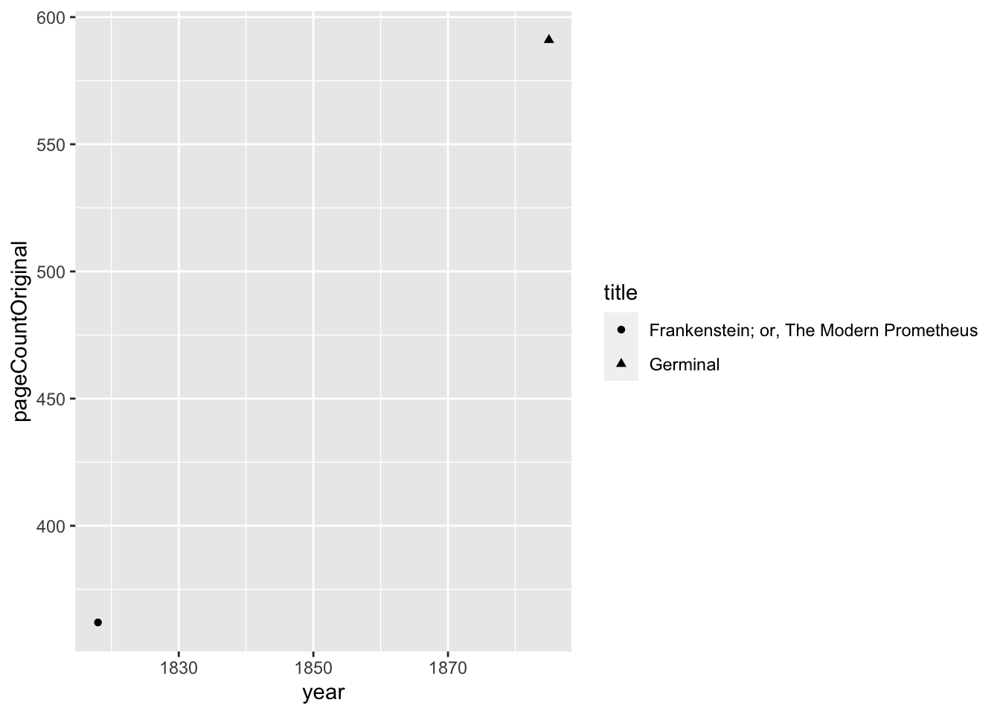
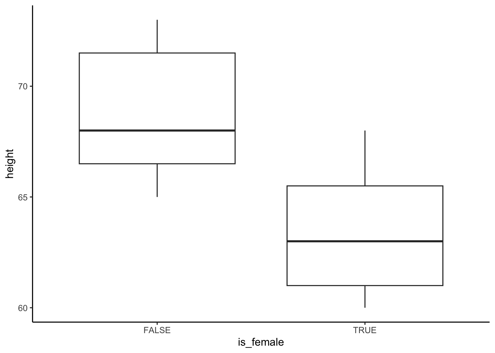

# install.packages("CTNote")
library(CTNote)
library(tidyverse)
data("outcomesCTN0094")Lesson 10: Wrangling Character Strings with stringr
Review
What did we learn last class?
- Subset Rows with
filter() - Sort Rows with
arrange() - Select and Move Columns with
select() - Create New Columns with
mutate() - Grouping and Group Summaries with
group_by()andsummarise() - Using
*_join()to Merge Tibbles
Overview
In this lesson, we will cover the following:
- String Matching
- Modifying Strings
- Substring Extraction
- Trim and Pad Strings
More About this Lesson
The original version of this material was largely from my memory and what Catalina and I needed to solve some problems, but “version 2” was restructured to draw from the training materials here: https://rstudio.github.io/cheatsheets/html/strings.html. The cool thing about the stringr package is that all of the functions start with str_. This means that you can more easily find helpful string functions. Also, as with all of the packages in the tidyverse, the stringr package comes with a nice cheat sheet: https://rstudio.github.io/cheatsheets/strings.pdf.
Example Data
We will use two data sets as examples in this lesson, one easy and one complex.
- Easy: the
fruitobject from thestringrpackage. This is a simple character vector of names of different fruits. This small data set comes automatically with the Tidyverse. - Medium: the
sentencesobject from thestringrpackage. This contains the 720 Harvard Sentences for North American English voice identification. This data set also comes automatically with the Tidyverse. - Complex: the
outcomesCTN0094data frame, with columnusePatternUDS, from theCTNotepackage. For more information about the character string in this data set, see Odom et al. (2023). Install this package via (make sure to uncomment the install line the first time you run it)
Exercises
- Inspect the vector
fruit. - Inspect first 20 elements of the vector
sentences. - Create a smaller version of the
outcomesCTN0094tibble with the following columns:who,usePatternUDS, andctn0094_relapse_time. Save it as an object in your Global environment calledoutcome_df.
String Matching
Functions to Know
str_detect(): detect the presence/absence of a matching patternstr_count(): count number of times a matching pattern appears in a string
Finding Matches
In the fruit vector, we may want to find which fruit names have the word “berry” or “berries” in them, then print those names. Because I want to detect both, I have two options.
Option 1: the character intersection of “berry” and “berries”:
# Create a logical vector to indicate which strings have the matching pattern
str_detect(string = fruit, pattern = "berr") [1] FALSE FALSE FALSE FALSE FALSE TRUE TRUE FALSE FALSE TRUE TRUE FALSE
[13] FALSE FALSE FALSE FALSE FALSE FALSE TRUE FALSE TRUE FALSE FALSE FALSE
[25] FALSE FALSE FALSE FALSE TRUE FALSE FALSE TRUE TRUE FALSE FALSE FALSE
[37] FALSE TRUE FALSE FALSE FALSE FALSE FALSE FALSE FALSE FALSE FALSE FALSE
[49] FALSE TRUE FALSE FALSE FALSE FALSE FALSE FALSE FALSE FALSE FALSE FALSE
[61] FALSE FALSE FALSE FALSE FALSE FALSE FALSE FALSE FALSE TRUE FALSE FALSE
[73] TRUE FALSE FALSE TRUE FALSE FALSE FALSE FALSE# Print the names of the fruits which have the matching pattern
fruit[ str_detect(string = fruit, pattern = "berr") ] [1] "bilberry" "blackberry" "blueberry" "boysenberry" "cloudberry"
[6] "cranberry" "elderberry" "goji berry" "gooseberry" "huckleberry"
[11] "mulberry" "raspberry" "salal berry" "strawberry" Option 2: using an “OR” statement (the | symbol):
# Create a logical vector to indicate which strings have the matching pattern
str_detect(string = fruit, pattern = "berry|berries") [1] FALSE FALSE FALSE FALSE FALSE TRUE TRUE FALSE FALSE TRUE TRUE FALSE
[13] FALSE FALSE FALSE FALSE FALSE FALSE TRUE FALSE TRUE FALSE FALSE FALSE
[25] FALSE FALSE FALSE FALSE TRUE FALSE FALSE TRUE TRUE FALSE FALSE FALSE
[37] FALSE TRUE FALSE FALSE FALSE FALSE FALSE FALSE FALSE FALSE FALSE FALSE
[49] FALSE TRUE FALSE FALSE FALSE FALSE FALSE FALSE FALSE FALSE FALSE FALSE
[61] FALSE FALSE FALSE FALSE FALSE FALSE FALSE FALSE FALSE TRUE FALSE FALSE
[73] TRUE FALSE FALSE TRUE FALSE FALSE FALSE FALSE# Print the names of the fruits which have the matching pattern
fruit[ str_detect(string = fruit, pattern = "berry|berries") ] [1] "bilberry" "blackberry" "blueberry" "boysenberry" "cloudberry"
[6] "cranberry" "elderberry" "goji berry" "gooseberry" "huckleberry"
[11] "mulberry" "raspberry" "salal berry" "strawberry"
Exercise
Find all the fruits with the word “fruit” in the name.
Counting Matches
In the outcome_df data set each symbol in the column usePatternUDS represents the patient status during the routine weekly clinic visit. The o symbol is used to represent a week when a clinical trial participant failed to visit the clinic for follow-up care. We can count how in many weeks each trial participant was missing (since this is an example, we will only look a the first 20 participants):
outcome_df$usePatternUDS[1:20] %>%
str_count(pattern = "o") [1] 15 7 21 3 15 14 20 25 22 3 6 6 11 19 25 6 0 25 7 25
Exercise
Missing 3 clinic visits in a row is often a strong prognostic signal for a negative health outcome. Count the number of times per participant that the pattern “ooo” is seen. Use the first 20 patients only.
Modifying Strings
Functions to Know
str_replace()/str_replace_all(): replace the first/all matches of a pattern in a string with new textstr_remove()/str_remove_all: remove the first/all matches of a pattern in a stringstr_to_lower()/str_to_upper(): convert a string to lower case/UPPER CASE
Replacing one Pattern with Another
In the fruit vector, we could replace all the vowels with upper case letters to help children identify vowels within words. Recall that str_replace() only replaces the first match in the character string, so we will use str_replace_all(). This will give an example of piping multiple string commands together (which is often how we perform string manipulation).
fruit %>%
str_replace_all(pattern = "a", replacement = "A") %>%
str_replace_all(pattern = "e", replacement = "E") %>%
str_replace_all(pattern = "i", replacement = "I") %>%
str_replace_all(pattern = "o", replacement = "O") %>%
str_replace_all(pattern = "u", replacement = "U") [1] "ApplE" "AprIcOt" "AvOcAdO"
[4] "bAnAnA" "bEll pEppEr" "bIlbErry"
[7] "blAckbErry" "blAckcUrrAnt" "blOOd OrAngE"
[10] "blUEbErry" "bOysEnbErry" "brEAdfrUIt"
[13] "cAnAry mElOn" "cAntAlOUpE" "chErImOyA"
[16] "chErry" "chIlI pEppEr" "clEmEntInE"
[19] "clOUdbErry" "cOcOnUt" "crAnbErry"
[22] "cUcUmbEr" "cUrrAnt" "dAmsOn"
[25] "dAtE" "drAgOnfrUIt" "dUrIAn"
[28] "EggplAnt" "EldErbErry" "fEIjOA"
[31] "fIg" "gOjI bErry" "gOOsEbErry"
[34] "grApE" "grApEfrUIt" "gUAvA"
[37] "hOnEydEw" "hUcklEbErry" "jAckfrUIt"
[40] "jAmbUl" "jUjUbE" "kIwI frUIt"
[43] "kUmqUAt" "lEmOn" "lImE"
[46] "lOqUAt" "lychEE" "mAndArInE"
[49] "mAngO" "mUlbErry" "nEctArInE"
[52] "nUt" "OlIvE" "OrAngE"
[55] "pAmElO" "pApAyA" "pAssIOnfrUIt"
[58] "pEAch" "pEAr" "pErsImmOn"
[61] "physAlIs" "pInEApplE" "plUm"
[64] "pOmEgrAnAtE" "pOmElO" "pUrplE mAngOstEEn"
[67] "qUIncE" "rAIsIn" "rAmbUtAn"
[70] "rAspbErry" "rEdcUrrAnt" "rOck mElOn"
[73] "sAlAl bErry" "sAtsUmA" "stAr frUIt"
[76] "strAwbErry" "tAmArIllO" "tAngErInE"
[79] "UglI frUIt" "wAtErmElOn"
Exercise
In the use pattern symbol vector the * symbol represents a mixture of positive and negative results. Change all * symbols to +. You will most likely need to escape the symbols with two backslashes.
Removing Characters that Match a Pattern
In much of text analysis, sentences are analyzed without the “filler words” (known as stop words), such as “and”, “to”, “the”, “of”, “a”, “was”, “is”, etc. We can remove these words from our set of sentences.
sentences[1:20] %>%
str_remove_all(pattern = "and") %>%
str_remove_all(pattern = "to") %>%
str_remove_all(pattern = "the") %>%
str_remove_all(pattern = "of") %>%
str_remove_all(pattern = "a") [1] "The birch cnoe slid on smooth plnks."
[2] "Glue sheet drk blue bckground."
[3] "It's esy tell depth well."
[4] "These dys chicken leg is rre dish."
[5] "Rice is ten served in round bowls."
[6] "The juice lemons mkes fine punch."
[7] "The box ws thrown beside prked truck."
[8] "The hogs were fed chopped corn grbge."
[9] "Four hours stedy work fced us."
[10] "A lrge size in sckings is hrd sell."
[11] "The boy ws re when sun rose."
[12] "A rod is used ctch pink slmon."
[13] "The source huge river is cler spring."
[14] "Kick bll stright follow through."
[15] "Help womn get bck her feet."
[16] "A pot te helps pss evening."
[17] "Smoky fires lck flme het."
[18] "The st cushion broke mn's fll."
[19] "The slt breeze cme cross from se."
[20] "The girl t booth sold fifty bonds."
Exercises
- Notice that the results above may not be what you expected. Some problems include:
- stop words at the beginning of the sentence were not removed
- some words are now misspelled
Brainstorm with your neighbour what you think went wrong and how you could fix it. 2. Try a few solutions you suggested in Exercise 1. 3. Some of the words now have extra spaces between them. What could we modify in the code above to address this?
Changing Case
In the above example, some of the stop words were not removed because they were at the start of the sentence (and therefore had a capital letter). We can change all the letters in a string to be the same case (which makes pattern matching easier) with the str_to_lower() and str_to_upper() functions. Notice that we added the str_to_lower() call in the pipeline before removing the stop words.
sentences[1:20] %>%
str_to_lower() %>%
str_remove_all(pattern = "and ") %>%
str_remove_all(pattern = "the ") [1] "birch canoe slid on smooth planks."
[2] "glue sheet to dark blue background."
[3] "it's easy to tell depth of a well."
[4] "these days a chicken leg is a rare dish."
[5] "rice is often served in round bowls."
[6] "juice of lemons makes fine punch."
[7] "box was thrown beside parked truck."
[8] "hogs were fed chopped corn garbage."
[9] "four hours of steady work faced us."
[10] "a large size in stockings is hard to sell."
[11] "boy was there when sun rose."
[12] "a rod is used to catch pink salmon."
[13] "source of huge river is clear spring."
[14] "kick ball straight follow through."
[15] "help woman get back to her feet."
[16] "a pot of tea helps to pass evening."
[17] "smoky fires lack flame heat."
[18] "soft cushion broke man's fall."
[19] "salt breeze came across from sea."
[20] "girl at booth sold fifty bonds."
Exercise
Notice that I modified the two stop words slightly. What did that change? Discuss with your neighbor and modify your code from the last exercise if necessary.
Tip: Order Matters
When calling string manipulation functions, the order of the function calls in the pipeline matters A LOT. Pay close attention to the orders of the actions you prescribe, and it’s usually very wise to run a stringr:: pipeline line-by-line as you build it.
Substring Extraction
Functions to Know
str_sub(): extracts or replaces the elements at a single position in each stringstr_extract()/str_extract_all(): extract the first/all matches of a pattern from each string
In my experience, the functions in this section are most useful when dealing with very organized text data. For example, my students and I were working on a dataset that recorded the heights of participants as text. The entries of this data table would have been something like this:
heightsF_char <- c("60in", "68in", "66in", "60in", "65in", "62in", "63in")
heightsM_char <- c("72in", "68in", "73in", "65in", "71in", "66in", "67in")Substrings by Position
If we know that the information we want is always in the same position, then we can create a substring using only the “letters” between these positions with str_sub().
# Count forward (from the start of the string):
heightsF_char %>%
str_sub(start = 1, end = 2)[1] "60" "68" "66" "60" "65" "62" "63"# Count backwards (from the end of the string):
heightsF_char %>%
str_sub(start = -4, end = -3)[1] "60" "68" "66" "60" "65" "62" "63"
Exercise
Pretend that you spoke with a clinician about the use patterns in the outcome_df data set. She informed you that the first three weeks should be considered an onboarding period for each participant, and therefore should be removed from the data before final analysis. Remove the symbols for the first three weeks.
Substrings by Pattern
Instead, if we know that the information we want is always the same pattern, then we can extract the matching pattern with str_extract().
heightsF_char %>%
# We want the numeric digits (\\d) that are two characters long ({2})
str_extract(pattern = "\\d{2}")[1] "60" "68" "66" "60" "65" "62" "63"If you are wondering where in the world that \\d{2} stuff came from, you’re not alone. It’s something called a regular expression. I don’t expect you all to become experts in this, but it’s worth studying the Posit Regular Expressions guide for how these character matching codes can be used in R.
Exercises
- If you attempt to extract a pattern from a string that doesn’t exist, what happens?
- If you attempt to extract a range of characters that doesn’t exist (for instance, using
start = 2andend = 1to have the end of the range before the start of the range), what happens? - Discuss these two results from the
str_sub()andstr_extract()functions with your neighbours. Think about cases where each might be useful.
Trim and Pad Strings
Functions to Know
str_length(): compute the number of “letters” in a stringstr_trim(): remove spaces from the start and end of stringstr_pad(): add spaces (or some other “letter”) to the start or end of a string until the string is a specified length
Overall, it’s often not immediately obvious when these functions would be useful to you, but know that from my experience that they are often unexpected lifesavers. I’m going to give three such examples from when these functions have helped me in the past.
String Lengths
The str_length() functions is useful when dealing with \(n\)-ary words. These are sets of letters or numbers where each single symbol from a pre-defined set of \(n\) possible symbols represents a state in a system. Examples include the use pattern “words” in the outcome_df data set; DNA/RNA (“CCCCAACGTGTG” is a string of letters where each single letter represents a one of the four DNA nucleotides bases—Cytosine, Adenine, Thymine, and Guanine); or class attendance (“PPPPPAPP” represents a student’s attendance record over eight weeks as “Present” or “Absent”).
# How many nucleotides in the strand?
str_length("CCCCAACGTGTG")[1] 12# How many weeks of attendance data?
str_length("PPPPPAPP")[1] 8Trimming Strings
This comes up for me most often when dealing with very long labels in ggplot figures. Sometimes a factor label is really long, and ggplot tries to fit the whole label in the figure, which ends up making the whole figure look weird.
Here’s an example. I’m going to create a simple data set with one very long factor label.
bookPages_df <- tibble(
title = c("Germinal", "Frankenstein; or, The Modern Prometheus"),
author = c("Emile Zola", "Mary Shelley"),
pageCountOriginal = c(591L, 362L),
year = c(1885, 1818)
)
# Original
ggplot(data = bookPages_df) +
aes(x = year, y = pageCountOriginal, shape = title) +
geom_point()
Now I’m going to truncate the very long title of Frankenstein.
# Truncated text
bookPages_df %>%
mutate(
title = str_trunc(title, width = 15)
) %>%
ggplot() +
aes(x = year, y = pageCountOriginal, shape = title) +
geom_point()
Padding Strings
This comes up when I’m trying to create file names in a computer. Here’s the issue:
1:11 %>%
as.character() %>%
sort() [1] "1" "10" "11" "2" "3" "4" "5" "6" "7" "8" "9" When the computer turns numbers into characters, the ordering of the numbers gets destroyed. We all know that I want 10 and 11 to come last, but the computer doesn’t interpret these numbers the way that I do. The solution is to pad the numbers on the left with “0” so that the ordering is preserved:
1:11 %>%
as.character() %>%
# Set the width to 2 digits if 99 is enough, but increase to 3 digits in case
# I need to go past 99 (up to 999)
str_pad(width = 3, side = "left", pad = "0") %>%
sort() [1] "001" "002" "003" "004" "005" "006" "007" "008" "009" "010" "011"Modifying Strings in Tibbles
So far, we have seen how the stringr functions can be used on a single character vector. However, many times we have character information stored as a column of a tibble. This requires us to modify our approach, and we often combine the stringr:: functions with calls to the mutate() function from dplyr::.
Example: Plotting Participant Heights
Here I show an entire (simplified) workflow to take in the height data and plot it by biological sex.
### Create tidy data ###
heights_df <- tibble(
is_female = c(
rep(TRUE, length(heightsF_char)),
rep(FALSE, length(heightsM_char))
),
heights = c(heightsF_char, heightsM_char)
)
### Wrangle the Data ###
heightsClean_df <-
heights_df %>%
# Step 1: Split the Units into another column
mutate(
units = str_sub(heights, start = -2, end = -1)
) %>%
# Step 2: Extract the height values
mutate(
value = str_extract(heights, pattern = "\\d{2}")
) %>%
# Step 3: change heights from character to numeric
mutate(
value = as.numeric(value)
) %>%
# Step 4: remove the original column (check your work beforehand)
select(-heights) %>%
# Step 5: rename
rename(height = value)
### Plot the Relationship ###
ggplot(data = heightsClean_df) +
theme_classic() +
aes(x = is_female, y = height) +
geom_boxplot()
Exercise
Between this lesson and the dplyr:: lesson, you now have the skills to join the ACS SNAP data to the Miami-Dade and Broward ZIP code data. Here are some basic steps:
- Import the data sets.
- Use the string manipulation functions to clean up the ZIP code columns until they can match.
- Join the data sets so that you have one table with all the ACS SNAP data combined for Miami-Dade and Broward counties.